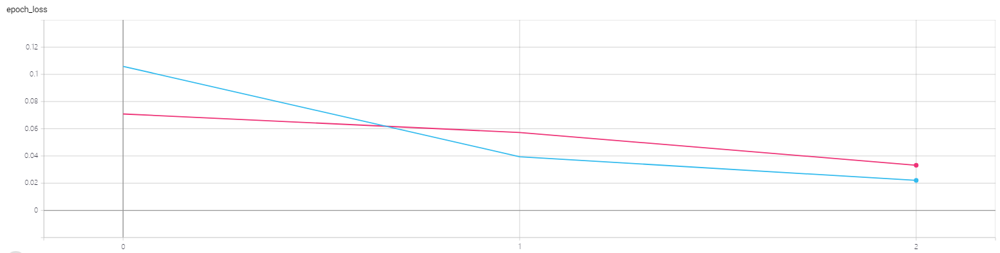

实验2：猫狗分类
实验内容
基于Tensorflow搭建卷积神经网络，实现猫狗分类。
数据集
猫狗分类的数据集来源Kaggle上的一个名为Cats vs. Dogs（猫狗大战）竞赛，该数据集包含训练集25000张彩色图像，图像的尺寸不固定，猫狗类别各占一半。数据集可在：https://www.kaggle.com/c/dogs-vs-cats/overview 下载。
本次实验由于受到机器性能限制，仅采用15000张图像，其中10000张图像作为训练集，2000张图像作为验证集，3000张图像作为测试集，所有数据集中猫狗类别各占一半。

实验环境
运行依赖
Python3.8.8
- tensorflow-2.2：神经网络框架
- matplotlib：绘图工具包
- datetime：时间管理器
- os：系统文件管理器
运行环境
GPU：GeoForce GTX 1660 Ti with Max-Q Design
数据预处理
图像文件 To DataSet
data_loader.py脚本实现负责将图像文件转为DataSet
xclass CatDogLoader(): def __init__(self, file_list, buffer_size, batch_size, num_epoch): # print(file_list[0:10]) self.image_data = {} # 遍历文件 for file_path in file_list: file_root, file_name = os.path.split(file_path) label = file_name.split('.')[0] label_name = None # 根据文件名打标签 if(label == 'cat'): label_name = 0 elif(label == 'dog'): label_name = 1 if(label_name != None): self.image_data[file_path] = label_name # print(self.image_data) all_image_path = list(self.image_data) all_image_label = list(self.image_data.values()) ds = tf.data.Dataset.from_tensor_slices((all_image_path, all_image_label)) image_label_ds = ds.map(self.load_and_preprocess_image) # buffer_size（随机缓冲区大小）:设置一个和数据集大小一致的 shuffle, 以保证数据被充分打乱 image_label_ds = image_label_ds.shuffle(buffer_size = buffer_size) # batch:数据打包分组,每batch_size个分数据成一组 image_label_ds = image_label_ds.batch(batch_size) # count:数据重复多少epoch, 训练的轮数 self.image_label_ds = image_label_ds.repeat(count = num_epoch) def load_and_preprocess_image(self, path, label): image = tf.io.read_file(path) image = tf.image.decode_jpeg(image, channels = 3) # 编码图像 image = tf.image.resize(image, (224, 224)) # 图像统一尺寸 image /= 255.0 # 图像归一化到[0-1] return image, label- os库用于读取文件名，并标记类别。
- 利用
tf.data.Dataset.from_tensor_slices构建Dataset文件列表，调用map方式批加载和预处理数据，然后调用shuffle打乱数据，batch将数据分批。
TFRecord To DataSet
TFRecord是TensorFlow中的数据集存储格式，可以高效地读取和处理数据集。它可以理解为一系列序列化的tf.train.Example元素所组成的列表文件，每一个tf.train.Example又由若干个tf.train.Feature的字典组成。createSmallRecord.py实现读取图像文件，创建TFRecord文件，并转化为DataSet。
xxxxxxxxxxdef create_tfrecord(root, all_filenames, tfrecord_dir): ''' 创建tfrecord文件 ''' # 创建标签 all_labels = [] for fname in all_filenames: if(fname.startswith('cat')): all_labels.append(0) elif(fname.startswith('dog')): all_labels.append(1) # TFrecord创建上下文环境 with tf.io.TFRecordWriter(tfrecord_dir) as writer: # 遍历原始数据 for filename, label in zip(all_filenames, all_labels): # 读取图片 file_path = os.path.join(root, filename) print(file_path, label) image = open(file_path, 'rb').read() # 创建Feautre feature = { 'image': tf.train.Feature(bytes_list = tf.train.BytesList(value = [image])), # 图片是Bytes对象 'label': tf.train.Feature(int64_list = tf.train.Int64List(value = [label])) # 标签是Int对象 } # 创建Example example = tf.train.Example(features = tf.train.Features(feature = feature)) # 序列化写入TFRecord文件 writer.write(example.SerializeToString())def read_tfrecord(tfrecord_dir): ''' 读取TFRecord文件 ''' raw_dataset = tf.data.TFRecordDataset(tfrecord_dir) # 读取TFRecord文件 dataset = raw_dataset.map(_parse_example).shuffle(3000).batch(16) for images, labels in dataset: # print(image.shape, type(image)) (16, 299, 299, 3) # print(label.shape, type(label)) (16,) col = 0 for i in range(16): img = images[i] img_label = labels[i] # print(img.shape, img_label.shape) # (28, 28, 1) cur_spec = (col, i % 4) if (i + 1) % 4 == 0: # 每4个换行 col +=1 plt.subplot2grid((4, 4), cur_spec) plt.imshow(img.numpy(), cmap='gray') plt.title('cat' if img_label == 0 else 'dog') plt.axis('off') plt.show() breakdef _parse_example(example_string): ''' 对TFRecord文件中的每一个序列化文件的tf.train.Example解码 ''' feature_dict = tf.io.parse_single_example(example_string, feature_desciption) # print(feature_dict) feature_dict['image'] = tf.io.decode_jpeg(feature_dict['image']) # 解码JPGE图像 image_resized = tf.image.resize(feature_dict['image'], [299, 299]) / 255 return image_resized, feature_dict['label']TFRecord创建：
将数据转为tf.train.Feature
将Feature转为Example
将Example序列化，写入TFRecord文件
TFRecord读取：
通过tf.Data.TFrecordDataset读取原始的TFRecord文件，得到Dataset对象
通过Dataset.map方法，将数据集每一个序列化的Example对象，通过tf.io.parse_single_example反序列化
实验结果
V1
基本版
6层：4卷积层+2全连接层
特点：
- 在浅层的感受野较大，深层的感受野较小
- 随着层数增加，特征图通道越多，尺寸越小
- 全连接层的神经元差异较小，参数量较小
缺点：
- 容易过拟合
- 陷入局部最优解
训练集和测试集结果曲线：（绿色训练集、灰色验证集）
训练细节
- batch_size：10
- epoch：20
- learning_rate：0.01
- momentum：0.001
- 优化方法：随机梯度下降
- 损失函数：交叉熵损失函数
正确率

损失
从训练过程中的验证集正确率曲线中以看到，训练集的正确率不断提高（95%），但是验证集的正确率仅有75%左右，说明模型出现过拟合现象。
改良版
在基础版的基础上，使用Dropout策略，避免过拟合；
6层：4卷积层+2全连接层+Dropout

训练集和测试集结果曲线：（红色训练集、蓝色验证集）
训练细节
- batch_size：10
- epoch：20
- learning_rate：0.01
- momentum：0.001
- 优化方法：随机梯度下降（SGD）
- 损失函数：交叉熵损失函数
正确率

损失

从训练过程中的验证集正确率曲线中以看到，训练集正确率和验证集正确率都再同步提高，最终达到80%左右，模型没有出现过拟合现象，但是模型的到达了性能瓶颈（80%左右）。
V2
经典的卷积神经网络，如VGGNet、GoogleNet和ResNet，是优秀的图像分类网络。实验通过采用VGG-16、InceptionV3、Res-50三款在ImageNet预训练的模型，由于它们之前是针对1000分类，所有实验中只利用它们的卷积层提取图像特征，再通过自定义的全连接层用于分类。
VGG-16

3层全连接层：
- Dense1：256神经元，激活函数ReLU
- Dense2：64神经元，激活函数ReLU
- Dense3：2神经元，激活函数softmax
训练集和测试集结果曲线：（红色训练集、蓝色验证集）
训练细节
- batch_size：10
- epoch：3
- learning_rate：0.01
- momentum：0.001
- 优化方法：随机梯度下降（SGD）
- 损失函数：交叉熵损失函数
正确率

损失

预训练的VGG-16模型比较强大，在训练早期，1-3epoch内就可以收敛，由于选用SGD优化方法，会存在正确率和损失的震荡。最终训练集和验证集正确率均达到95%以上，测试集正确率为97.76%。
InceptionV3
3层全连接层：
- Dense1：512神经元，激活函数ReLU
- Dense2：128神经元，激活函数ReLU
- Dense3：2神经元，激活函数softmax
训练集和测试集结果曲线：（蓝色训练集、红色验证集）
训练细节
- batch_size：10
- epoch：10
- learning_rate：0.01
- momentum：0.001
- 优化方法：随机梯度下降（SGD）
- 损失函数：交叉熵损失函数
正确率
损失
预训练的InceptionV3也十分强大，在较短的训练时间下训练集和验证集就能达到95%以上的正确率，最终的测试集上的正确率为98.2%。
Res-50

3层全连接层：
- Dense1：512神经元，激活函数ReLU
- Dense2：128神经元，激活函数ReLU
- Dense3：2神经元，激活函数softmax
训练集和测试集结果曲线：（蓝色训练集、红色验证集）
训练细节
- batch_size：10
- epoch：3
- learning_rate：0.01
- momentum：0.001
- 优化方法：随机梯度下降（SGD）
- 损失函数：交叉熵损失函数
正确率
损失

预训练的Res-50模型依然十分强大，几乎在1个epoch之内就能达到95%以上的正确率，最终的测试集上的正确率为98.2%。